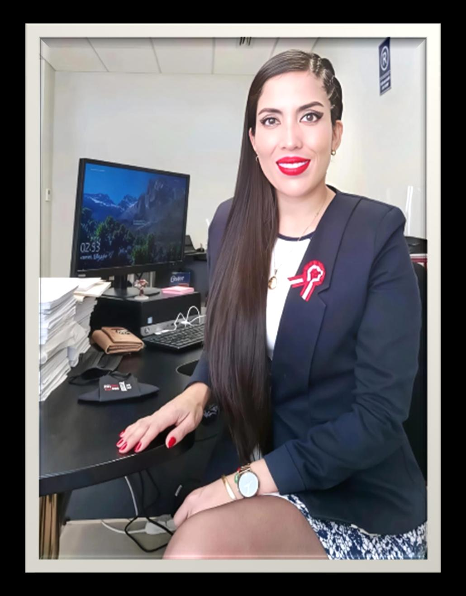

Presidenta
Sandra Yudith Sánchez Tisnado
Abogada, magíster en Gestión Pública, conciliadora y con estudios en la Academia de la Magistratura.
Ver perfilQuiénes somos
Somos una sociedad sin fines de lucro que impulsa el desarrollo de las abogadas del Perú, la colaboración entre colegas y el acceso a la justicia.
Nuestra misión y nuestro equipoDirección y equipo fundador
Integrante 1 de 9
Desliza para conocer a las integrantes.
Presidenta
Abogada, magíster en Gestión Pública, conciliadora y con estudios en la Academia de la Magistratura.
Ver perfilVicepresidenta
Abogada y empresaria, especializada en Derecho Civil, Inmobiliario y Minero.
Ver perfilSecretaria general
Abogada integrante del equipo de la Sociedad de Abogadas del Perú.
Ver perfilTesorera
Abogada y asistente administrativo en la Municipalidad Provincial de Ascope.
Ver perfilFiscal
Abogada litigante especializada en Derecho Civil, Gestión Pública y saneamiento físico-legal de predios.
Ver perfilSecretaria de liderazgo
Litigante en materia de familia y laboral.
Ver perfil
Secretaria de proyección
Abogada especialista en Derecho Administrativo y Gestión Pública.
Ver perfilSecretaria de capacitación
Abogada, conciliadora extrajudicial y litigante, especializada en Familia, Sucesiones y Derecho Civil Corporativo.
Ver perfilSecretaria de relaciones institucionales y convenios
Abogada especialista en Derecho de Familia y Civil, conciliadora extrajudicial y árbitro.
Ver perfilPara quienes buscan una abogada
Explora las áreas del Derecho y conoce a las profesionales de la Sociedad.
Encontrar una abogadaDesarrollo profesional
Formación y liderazgo
Las herramientas para dirigir tu carrera, tu despacho y tu próxima etapa profesional.
Conocer Yo GerencioConexión y respaldo
Una red donde compartir experiencia, abrir oportunidades y crecer acompañada.
Conocer Comunidad ExpertaVoz y visibilidad
El espacio para compartir tu criterio jurídico y hacer escuchar tu voz.
Conocer Tribuna FemeninaForma parte de la Sociedad
Conoce los beneficios y condiciones de incorporación.
Compromiso social
JUSTA es nuestra propuesta de asesoría legal gratuita y apoyo social para familias en situación de extrema pobreza.
Conocer JUSTAVoces de la Sociedad
Desliza para conocer sus mensajes.
 0:29
0:29Un mensaje de nuestra comunidad
 0:40
0:40Un mensaje de nuestra comunidad
 0:33
0:33Un mensaje de nuestra comunidad
 1:26
1:26Un mensaje de nuestra comunidad
 0:54
0:54Un mensaje de nuestra comunidad
 1:00
1:00Un mensaje de nuestra comunidad
 0:45
0:45Un mensaje de nuestra comunidad
 0:57
0:57Un mensaje de nuestra comunidad
 0:29
0:29Un mensaje de nuestra comunidad
Nuestra comunidad
Conoce a nuestras integrantes, sigue los mensajes de la Sociedad y recibe novedades sobre nuestra comunidad.
Conoce nuestra comunidad